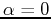

Problem: A sinusoidal current with a frequency of 60 Hz reaches a positive maximum of 20A at . Give the expression of this current as a function of time .
Solution:
We have , ,
,
. As cosine function
reaches maximum when  (or
), the phase angle should satisfy
where and
, i.e.,